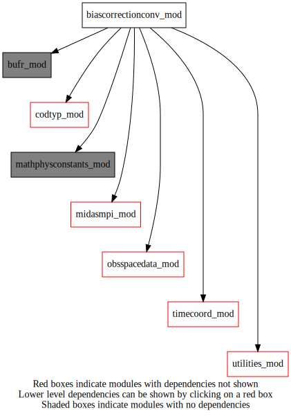
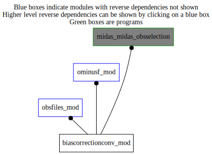

Dependency Diagrams:
 Direct Dependency Diagram¶
 Reverse Dependency Diagram¶
Description
MODULE biasCorrectionConv_mod (prefix=”bcc” category=’1. High-level functionality’)
- Purpose
Performs bias correction for conventional observations
Quick access
- Types
- Routines
bcc_applyaibcor(),bcc_applygpbcor(),bcc_applyuabcor(),bcc_biasactive(),bcc_getsolarelevation(),bcc_getsondetype(),bcc_gettimeofday(),bcc_getuacorrection(),bcc_latband(),bcc_readaibiases(),bcc_readconfig(),bcc_readgpbiases(),bcc_readuabcorstn(),bcc_readuabcorstype(),bcc_sondeindex(),bcc_stationindex(),bcc_uacorrection(),bcc_uaphase()Needed modules
utilities_mod: MODULE utilities_mod (prefix=’utl’ category=’8. Low-level utilities and constants’)
obsspacedata_mod: MODULE obsSpaceData_mod (prefix=’obs’ category=’6. High-level data objects’)
mathphysconstants_mod: MODULE MathPhysConstants_mod (prefix=’mpc’ category=’8. Low-level utilities and constants’)
midasmpi_mod: MODULE midasMpi_mod (prefix=’mmpi’ category=’8. Low-level utilities and constants’)
bufr_mod: MODULE bufr_mod (prefix=’bufr’ category=’8. Low-level utilities and constants’)
codtyp_mod: MODULE codtyp_mod (prefix=’codtyp’ category=’8. Low-level utilities and constants’)
timecoord_mod: MODULE timeCoord (prefix=’tim’ category=’7. Low-level data objects’)Types
- type biascorrectionconv_mod/sondetype¶
- Type fields
% codes (20) [integer ]
% name [character ]
Variables
Subroutines and functions
- subroutine biascorrectionconv_mod/bcc_readconfig()¶
- Purpose
Read NAMBIASCONV namelist section and NAMSONDETYPES section if uaBiasActive=true
- Called from
bcc_readaibiases(),bcc_applyaibcor(),bcc_readgpbiases(),bcc_applygpbcor(),bcc_biasactive()- Call to
- function biascorrectionconv_mod/bcc_uacorrection(timeofdayx, corrnight, corrday)¶
- Purpose
Returns a UA bias correction from day and night corrections
- Arguments
timeofdayx [real ,in] :: 0.0 (night) <= timeOfDayX <= 1.0 (day), depends on solar_elev
corrnight [real ,in] :: night bias correction
corrday [real ,in] :: day bias correction
- Return
uacorrection [real ]
- Called from
- subroutine biascorrectionconv_mod/bcc_getuacorrection(varname, stnindex, sondetypeindex, sondetype, biasprofilecategory, timeofdayx, latband, obspressure, corr, sourcecorr)¶
- Purpose
Return a TT or TD bias correction (corr)
- Arguments
varname [character ,in]
stnindex [integer ,in]
sondetypeindex [integer ,in]
sondetype [character ,in]
biasprofilecategory [integer ,in]
timeofdayx [real ,in]
latband [integer ,in]
obspressure [real ,in]
corr [real ,out]
sourcecorr [character ,out]
- Called from
- Call to
- function biascorrectionconv_mod/bcc_stationindex(station)¶
- Purpose
Return the station index (order in array uaStations) corresponding to station Returns -1 if station is not found in uaStations.
- Arguments
station [character ,in]
- Return
stationindexout [integer ]
- Called from
- Call to
- function biascorrectionconv_mod/bcc_sondeindex(sondetype)¶
- Purpose
Return the Sonde Type index (order in array rsTypes) corresponding to the SondeType Requires array of sondeType structures (rsTypes) to be allocated and filled. Returns -1 if SondeType is not found in rsTypes.
- Arguments
sondetype [character ,in]
- Return
sondeindex [integer ]
- Called from
- Call to
- subroutine biascorrectionconv_mod/bcc_getsondetype(sondetypecode, sondetype, sondetypeindex)¶
- Purpose
Returns the sonde type and index given a BUFR table sondeTypeCode (BUFR elem 002011) Returns sondeType=’unknown’, sondeTypeIndex=0 if sondeTypeCode is not found.
- Arguments
sondetypecode [integer ,in]
sondetype [character ,out]
sondetypeindex [integer ,out]
- Called from
- Call to
- subroutine biascorrectionconv_mod/bcc_getsolarelevation(lat, lon, date, time, solarelev)¶
- Purpose
Returns the solar elevation angle (degrees) given lat,lon,date(yyyymmdd),time(hhmm)
- Arguments
lat [real ,in] :: radians
lon [real ,in] :: radians
date [integer ,in] :: yyyymmdd
time [integer ,in] :: hhmm
solarelev [real ,out] :: degrees
- Called from
- subroutine biascorrectionconv_mod/bcc_gettimeofday(solarelev, timeofdayx)¶
- Purpose
Returns the time-of-day x value (0.0(night) <= x <= 1.0(day))
- Arguments
solarelev [real ,in] :: degrees
timeofdayx [real ,out]
- Called from
- function biascorrectionconv_mod/bcc_uaphase(codetype)¶
- Purpose
Returns the radiosonde phase (1=ascent, 2=descent) given a header code type
- Arguments
codetype [integer ,in]
- Return
uaphase [integer ]
- Called from
- Call to
- function biascorrectionconv_mod/bcc_latband(latinradians)¶
- Purpose
Returns latitude band number given latitude (radians)
- Arguments
latinradians [real ,in]
- Return
latband [integer ]
- Called from
- subroutine biascorrectionconv_mod/bcc_readaibiases(biasestimatefile)¶
- Purpose
Read aircraft (AI) TT bias estimates from bias file and fill bias correction array ttCorrections. The first line of the file is the number of aircraft plus one. The rest of the file gives 15 values of Mean O-A for each aircraft, with each (AC,value) line written in format “a9,1x,f6.2”. The order is the same as what is written by genbiascorr script genbc.aircraft_bcor.py. The first “aircraft” (AC name = BULKBCORS) values are the bulk biases by layer for All-AC (first 5 values), AIREP/ADS (second 5 values) and AMDAR/BUFR (last 5 values). Missing value = 99.0.
- Arguments
biasestimatefile [character ,in]
- Called from
- Call to
- subroutine biascorrectionconv_mod/bcc_applyaibcor(obsspacedata)¶
- Purpose
to apply aircraft (AI) bias corrections to observations in ObsSpaceData
- Arguments
obsspacedata [struct_obs ]
- Called from
- Call to
bcc_readconfig(),bcc_readaibiases(),obs_getheaderindex(),obs_headelem_i(),obs_bodyelem_i(),obs_bodyelem_r(),codtyp_get_name(),utl_abort(),obs_elem_c(),obs_bodyset_i(),obs_headset_i()
- subroutine biascorrectionconv_mod/bcc_readgpbiases(biasestimatefile)¶
- Purpose
Read GB-GPS bias estimates (mean ZTD O-A [mm] by station) and fill bias correction array ztdCorrections. Missing value = -999.00
- Arguments
biasestimatefile [character ,in]
- Called from
- Call to
- subroutine biascorrectionconv_mod/bcc_applygpbcor(obsspacedata)¶
- Purpose
to apply GB-GPS (GP) ZTD bias corrections to ZTD observations in ObsSpaceData
- Arguments
obsspacedata [struct_obs ]
- Called from
- Call to
bcc_readconfig(),bcc_readgpbiases(),obs_getheaderindex(),obs_bodyelem_i(),obs_bodyelem_r(),obs_elem_c(),obs_bodyset_i()
- subroutine biascorrectionconv_mod/bcc_readuabcorstype(biascorrectionfilename, ngroups)¶
- Purpose
Read night and day TT, TD biases by SONDE TYPE and latitude band on 16 mandatory levels for UA family.
- Arguments
biascorrectionfilename [character ,in]
ngroups [integer ,in]
- Called from
- Call to
- subroutine biascorrectionconv_mod/bcc_readuabcorstn(biascorrectionfilename, nprofsmin, ngroups)¶
- Purpose
Read TT, TD biases by STATION/sonde-type on 16 mandatory levels for UA family.
- Arguments
biascorrectionfilename [character ,in]
nprofsmin [integer ,in]
ngroups [integer ,in]
- Called from
- Call to
- subroutine biascorrectionconv_mod/bcc_applyuabcor(obsspacedata)¶
- Purpose
To apply bias corrections to radiosonde TT and ES observationa in obsSpaceData This public routine is called by external routines.
- Arguments
obsspacedata [struct_obs ,inout]
- Called from
- Call to
bcc_readuabcorstype(),bcc_readuabcorstn(),obs_getheaderindex(),obs_elem_c(),bcc_stationindex(),obs_headelem_i(),obs_headelem_r(),bcc_uaphase(),bcc_getsondetype(),bcc_getsolarelevation(),bcc_gettimeofday(),bcc_latband(),utl_abort(),obs_bodyelem_i(),obs_bodyelem_r(),bcc_getuacorrection(),obs_bodyset_i()
- function biascorrectionconv_mod/bcc_biasactive(obsfam)¶
- Purpose
returns True if bias correction is active for the given conventional observation family
- Arguments
obsfam [character ,in]
- Return
biasactive [logical ]
- Called from
- Call to
{kind=link}
{kind=link}